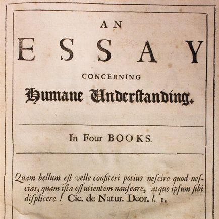

Locke’s Essay concerning Human Understanding
Tue., Mar. 11
In this class, we begin discussing Locke’s Essay. The focus is on his critique of nativism, his empiricist account of the origin of ideas,
and his discussion of so-called ‘primary and secondary qualities’. We also touch on his rejection of the Cartesian identification of spiritual
substances with thought (Locke allows for dreamless sleep) and corporeal substances with extension (Locke allows for vacuums).
Key Concepts: Nativism, Concept Empiricism, Primary and Secondary Qualities
Readings:
required
Powerpoint Slides:
Other Resources:
Early Modern Texts
Stanford Encyclopedia of Philosophy
Internet Encyclopedia of Philosophy